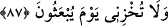
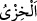
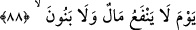
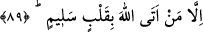

87. (İnsanların) diriltilecekleri gün, beni mahcup etme.
İnsanların hepsinin kabirlerden “diriltilecekleri gün, beni mahcup etme.”
“
” değersizlik ve rezillik demektir. Yâni evlâ olanı terk etmek kabilinden
hatalarımdan dolayı beni azarlayarak rezil etme, gizli sırlarımı ortaya dökme ve rüsvây
kılma.
İbrâhim (a.s.), Allah’ın kendisini mahcup etmeyeceğini bildiği halde böyle duâ
etmesi, kulluğunu ızhâr etmek, başkasını da bu konuda kendisine uymaya teşvik etmek
içindir. Nitekim Kâşifî şöyle der: “Bu duâ da ümmetlere öğretmek içindir, yoksa
peygamberler için rezil ve rüsvay olma söz konusu değildir.” Çünkü peygamberler sû-i
hâtime ve benzeri korkulardan emniyettedirler.
“Ceza günü hatamı bağışlayacağını umduğum da O’dur.” âyetine göre İbrâhim
(a.s.)’ın bu duâsı, artık Allah’ın kendisini azarlamayacağına da delâlet etmediğinden
O’ndan af diledikten sonra ayrıca “(İnsanların) diriltilecekleri gün beni utandırma”
diye dua ederek muâheze olunmamasını Allah’tan taleb etti.
Âyette insanların açıkça zikredilmemesi, ba’sin (diriltilmenin) genel olup onlara
delâlet etmesi sebebiyledir. “Utandırmamak” diriltilme gününe bağlanması, dünyanın
“es-Settâr” (örten, saklı tutan) isminin mazharı olması sebebiyledir.
Ebü’l-Leys der ki: İbrâhim (a.s.)’ın kelâmı burada son bulmaktadır. Sonra Allah
Teâlâ bu günü anlatarak şöyle buyurdu:
88. O gün, ne mal fayda verir ne de evlât.
Mal dünyada her ne kadar hayır yollarına sarfedilmiş olsa da kimseye fayda vermez.
Evlatlar da her ne sâlih ve şefaata ehil olsalar da hiçbir ferde fayda vermezler.
89. Ancak Allah’a kalb-i selîm (temiz bir kalp) ile gelenler (o günde fayda bulur).
“Ancak Allah’a” ihlâslı, küfûr ve nifak hastalığından kurtulmuş bir kalb ile “kalb-i
selîm (temiz bir kalp) ile gelenler (o günde fayda bulur).” İşte malın ve evlâdın fayda
vermesi, bu zarûrî şarta bağlanmıştır.